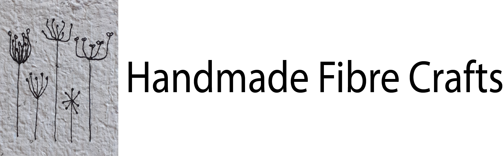

Hi, my name is Trudy and I am Handmade Fibre Crafts.
I am based in Dunedin, New Zealand. We are an online store but if you are in town and would like to visit please contact me any time.
We offer contactless pickup and can deliver in the wider Dunedin area free of charge.
If you have any questions please email me at tmilnexx@gmail.com and I will try to get back to with in one business day.
Find us on Instagram @handmadefibrecrafts and Facebook Handmade Fibre Crafts